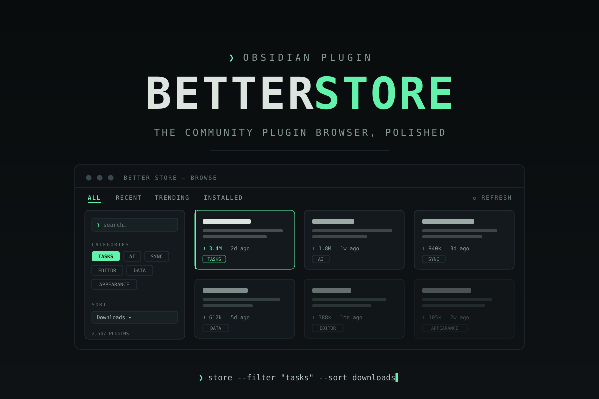

The Obsidian community plugin browser, polished — filters, categories, rich previews, trending, and an installed-plugins dashboard.
A filter sidebar, card grid, and detail pane — in a tab, a split, or its own window. Not a cramped modal.
Search, heuristic categories, updated-within, minimum downloads, hide installed; sort by downloads, recency, name, or trending.
Rendered README with images, GitHub stars and open issues, recent releases, and funding links — fetched lazily, cached locally.
Local download-delta tracking that builds up as you use the plugin. No external service, no telemetry.
Versions vs. latest, update badges, enable/disable toggles with bulk select, staleness warnings, changelog links.
Explorer-style folders derived from the active sort — download tiers, recency, A–Z, trending — with a stale drawer.
A fuzzy search command opens any plugin's details from anywhere; arrow keys drive the grid and tree.
A background check badges the ribbon icon (and optionally notifies) when installed plugins have updates.
Hide a plugin, everything by an author, or an entire category. All reviewable in settings.
Named enable-sets you switch in one click, plus Markdown/JSON export and import of your plugin list.
Maintenance-health chips, download-history sparklines, inline release notes, and similar-plugin suggestions.
❯ Settings → Community plugins → Browse → "Better Store" → Install # or view the listing: community.obsidian.md/plugins/better-store
# 1. download main.js, manifest.json, styles.css from the latest release # 2. place them in your vault: ❯ YourVault/.obsidian/plugins/better-store/ # 3. Settings → Community plugins → enable "Better Store" # assets are provenance-attested: gh attestation verify main.js -R Real-Fruit-Snacks/obsidian-better-store
| Setting | What it does |
|---|---|
| GitHub token | Optional. Raises the GitHub API rate limit for stars/issues/releases data. A classic token with no scopes is enough. Stored in Obsidian's secret storage — never in plugin data, so it doesn't travel with vault sync or backups. |
| Cache lifetime | How long the plugin catalog is cached (default 12 h). Manual refresh in the store header. |
| Default sort | Downloads, recently updated, name, or trending. |
| Open the store in | A tab, a split, or a new window (desktop-only; falls back to a tab on mobile). |
| Hide installed | Start with already-installed plugins hidden. |
| Show "New" badges | Highlight plugins that entered the registry within the last 14 days. |
| Track recently viewed | Ranks plugins you've opened recently first in quick-jump search. |
| Detail pane | Individual toggles for the maintenance-health chip, similar-plugins row, and download-history sparkline. |
| Updates | Background update checks (ribbon badge) and the found-updates notice, each togglable. |
| Portability | Export the installed list as Markdown or JSON; import a list to see what's missing. |
| Profiles | Review and delete saved enable-sets (created from the Installed tab). |
| Filter presets | Review and delete saved sidebar filter combinations. |
| Starred / Ignored | Managed lists for favorites, ignored plugins, ignored authors, and ignored categories. |
The repository ships a .gitlab-ci.yml, so the project can also be hosted and built on a self-hosted GitLab instance — same verify/build pipeline, plugin artifacts, and a GitLab Pages copy of this site.